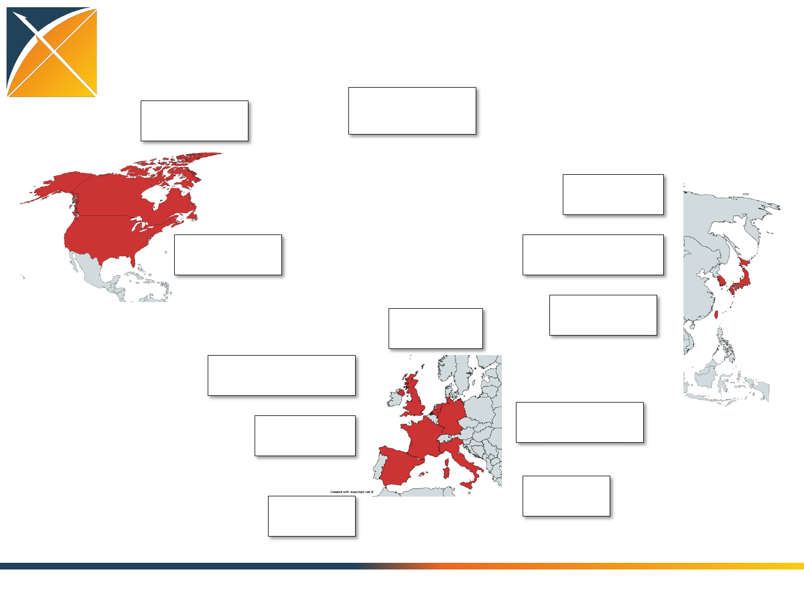
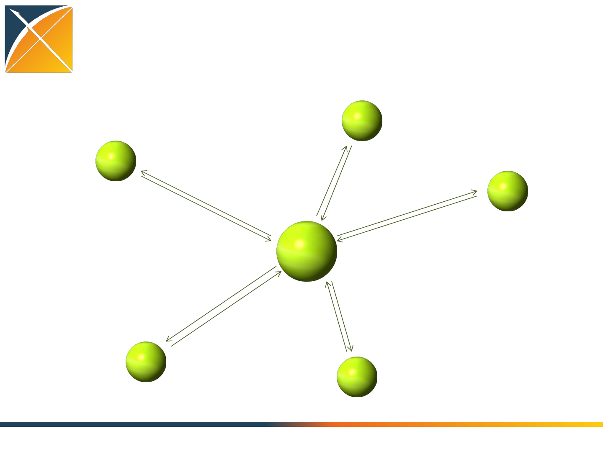

Experiences from the OHDSI
international data network
Panel Discussion
Peter Rijnbeek – Erasmus University, Netherlands
Rae Woong Park – Ajou University, South Korea
Parsa Mirhaji – Einstein College, USA
Paul Biondich – OpenMRS, USA
Christian Reich – IMS, USA
20 Oct 2015

Worldwide OHDSI Network
USA: 602.5M
37 databases
Canada: 2.3M
1 database
UK: 21.6M
2 databases
France: 2.5M
2 databases
Germany: 12.9M
3 databases
Italy: 4.0M
1 database
Spain: 4k
1 database
Japan: 2.9M
1 database
Sourth Korea: 2.4M
1 database
Taiwan: 2.0M
1 database
Netherlands: 2.0M
1 database
Total: 655M
51 databases

OHDSI – Benefit for Each Collaborator
Nobody can do it all alone!
Standardization of Data and Analytics
–OMOP Common Data Model and Standard Vocabularies
–Standardized (=repeatable) Queries
–Standardized Tools
–Standardized Methods
Access to Collaborators
–Statisticians
–Clinical Researchers
–Software developers
–Infrastructure experts

OHDSI Network Effect
•Network effect:
–Cost proportional to number of nodes
–Benefit proportional to square of number of nodes
•Benefit from joining
•Benefit from other nodes
•Network effect possible through
–Interoperability
–Standardization
–Open Source

The Network in Action
Standardized query
in R or SQL
Summary stats
(no patient level data)
Study protocol
Standardized result
Summary stats
Aggregation of results
Paper
OMOP CDM
Standardized tools
OMOP CDM
Standardized tools
OMOP CDM
Standardized tools
OMOP CDM
Standardized tools
OMOP CDM
Standardized tools
OMOP CDM
Standardized
tools

Panel Discussion
1. What was your motivation for joining the OHDSI community and
adopting the OMOP common data model?
2. What value do you anticipate receiving by participating in the
OHDSI network moving forward?
3. How can we make it better?
Panelists:
•Rae Woong Park, MD, PhD, Professor, Ajou University School of
Medicine, South Korea
•Peter Rijnbeek, PhD Assistant Professor, Erasmus Medical Center
•Parsa Mirhaji, MD, PhD, Director of Clinical Research Informatics at
Montefiore Healthcare System, Albert Einstein College of Medicine
•Paul Biondich, MD, Founder and President, OpenMRS